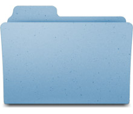

XTBookについて
XTBookは電子辞書Sharp Brainでウィキペディア及びアンサイクロペディアを可能な限り原版に忠実な形で表示するために開発されたプログラムです。
ウィキペディアのダンプを変換して生成されるXTBook Wikiplexus及び画像をデータベース化したImage Complex形式のデータベースに対応します。
また、XTBook Wikiplexusに内蔵された検索データベースを利用し、1,000,000件以上のキーから高速に検索をすることができます。
CeTBookとの違い
- CeTBookはMediaWiki文法を独自形式のマークアップに変換していましたが、XTBookではMediaWiki文法の大部分を保持し、表示時にそれをHTMLに変換し、そのHTMLをブラウザエンジンで表示します。
- MediaWiki RandomSelection拡張にも対応するため、表示するたびに内容の変化するテンプレートを表示することができます。
- データベースの形式が異なります。
- データベースの変換CPU時間が500分の1で済みます。
- データベースの圧縮に、より高速なRax(Random Accessible Xz)形式を使用しています。
- ただしページの読み込みには10から50倍の時間がかかります。
- より多くのメモリを消費します(10から20倍)。
- 処理能力の関係上、複数のページに分割されることがあります。
- より滑らかにスクロールすることができます。
- ごく一部のHTML及びスタイルを解釈できます。
- アンサイクロペディアの禁則事項です等を表示することができます。
- アンサイクロペディアのゾークをプレイすることができます。
- 一部のテンプレートの構造が保たれます。
- 一部の情報ボックスを右寄せにすることができます。
- スタイル付けされた表の一部を表示することができます。
- セルが結合された複雑な表を表示することができます。
- なお、外部CSSには対応しません。
- タブを並び替え・閉じることができます。
- リンクを新しいタブで開くことができます。
- リンクをシングルタップで開くことができます。
- 履歴が保存されます。
- ブックマークを保存することができます。
- アンチエイリアスフォントを使用します。
- 画像を表示することができます。
- Unicodeの装飾記号の一部に対応します。
- 設定はMac OS X プロパティリスト方式で保存されます。
- テキストを選択して検索することができます。
- 1ペイン方式です。
- GPLライセンスです。
ディレクトリ構成

Mac OS X版では、多くのファイルはXTBook.app/Contents/Resourcesに含まれています。
- XTBook.exe (Windows/Sharp Brain版), XTBook(.app) (Mac OS X版)
- XTBookの本体です。
- SDL.dll (Windows/Sharp Brain版)
- ライブラリSimple DirectMedia Layerのファイルです。
- mingwm10.dll (Sharp Brain版)
- XTBookで必要な、mingw32ceのランタイムライブラリです。
- Dictionaries/
- ウィキペディア等の辞書を保存するフォルダです。
- StartupItems/
- 起動時に読み込まれる項目を保存するフォルダです。
- InternalDictionaries/
- システム内部で使用する辞書を保存するフォルダです。この内容を変更することは推奨されません。
- Languages/
- XTBookの言語ファイルを含むフォルダです。
インストール
Sharp Brain版 (アプリメニューから起動する)
- XTBook.exeのファイル名をAppMain.exeに変更します。
- SDまたはmicroSDカードにフォルダ アプリがあることを確認します。そのフォルダが無い場合は作成します。
- フォルダXTBook-x.x.x-Brainをフォルダアプリの中にコピーします。
Sharp Brain版 (CeOpener等、他のランチャーから起動する)
- SDまたはmicroSDカードの任意の場所にフォルダXTBook-x.x.x-Brainをコピーします。
- フルスクリーンモードにしたい場合は、XTBook.exeのファイル名をAppMain.exeに変更します。
Mac OS X版
- XTBook(.app)をアプリケーションフォルダにコピーします。
辞書のインストール
XTBookは、拡張子.xtbdictの辞書データをサポートします。なお、同じ拡張でも内部形式が異なる場合もあります。
.xtbdictの辞書データをインストールするには、フォルダDictionariesに.xtbdictのフォルダ(バンドル)ごとコピーしてください。
言語設定
 左下の矢印をタップ(クリック)してPreferences...から環境設定を表示し、言語を変更することができます。なお、言語設定はXTBookを再起動するまで適用されないことがあります。
左下の矢印をタップ(クリック)してPreferences...から環境設定を表示し、言語を変更することができます。なお、言語設定はXTBookを再起動するまで適用されないことがあります。
キーボード操作について
XTBookはタッチパネル操作に最適化されていますが、一部の機能はキーボードでも使用することができます。

| F1 |
入力言語を切り替えます。 |
| F2 |
左から1番目のタブを表示します。 |
| F3 |
左から2番目のタブを表示します。 |
| F4 |
左から3番目のタブを表示します。 |
| エスケープ/戻る |
メインメニュー(左下の矢印)を表示します。 |
| 左右矢印キー |
スタートページの「ブックマーク」「最近表示したページ」リストを選択します。 |
| スタートページ以外では、アドレスバーのキャレット(点滅するバー)を移動します。 |
| 上下矢印キー |
記事表示中は、記事をスクロールします。 |
| リスト選択中は、リスト項目の選択を移動します。 |
| クリア |
アドレスバーを消去し、スタートページに戻ります。 |
リリースノート (0.1.3)
このバージョンにおける既知のバグ・仕様の一覧です。
システム
- フルスクリーンモードを環境設定から切り替えることができません。Sharp Brain版においてフルスクリーンモードを使用するにはファイル名をAppMain.exeに変更する必要があります。
- 起動時にエラーが発生した場合、メッセージボックスが表示されず停止する場合があります。
- 環境設定に「一部の設定は…」とありますが、設定は1つしかありません。
- Sharp Brain版においてウィンドウモードの場合、ウィンドウ内をタップするまで動作しないことがあります。これはSDLの問題であると考えられます。
- Mac OS X版において、白が完全な白になりません。これはSDLの問題であると考えられます。
- 非アンチエイリアスフォントを削除しました。これにより実行可能ファイルが約500KB軽量化されます。
- >スタートアップ項目に対応しました。フォルダStartupItemsに適切な実行可能ファイルを配置することにより、SDHCの有効化などを行うことが出来ます。
- スクロールビューに操作不可能なスクロールバーを追加しました。
- フォントレイアウトを更新しました。
- 進捗状況オーバーレイのCPU使用率を最適化しました。
- 進捗状況オーバーレイの動作を0.1秒高速化しました。
TWiki Parser (MediaWiki互換レイヤ)
- 複雑なMediaWiki構文の解釈に失敗することがあります。
- SUBST:、MSG:、MSGNW:及びSAFESUBST:を無視します。
- style、class属性以外のCSS指定を破棄します。
- ---- (区切り線)を処理しません。
- 言語間リンクを無視します。
- カテゴリを無視します。
- ISBN番号等を処理しません。
- <pre>要素等を正しく処理しない場合があります。
- FIXED:不正な箇条書きタグを生成することがあります。
- RandomSelectionの乱数のシードは初期化されていないため、結果が予測可能な場合があります。
- NEW:60%高速化しました。
TWiki Renderer (WebKit互換レイヤ)
- clear指定がある場合、強制的にbothとなる場合があります。
- FIXED:float要素の位置が不正となる場合があります。このためデザインが崩壊することになります。
- スタイルの大部分に対応しません。
- スタイルの色の名前はX Window Systemの色として解釈するため、一部不正に解釈されます。
- スタイルの色名が不正な場合、XTBookがクラッシュすることがあります。
- FIXED:スタイルの色指定のアルファチャンネルを無視します。
- 箇条書きのスタイルに対応しません。
- エレメントに挟まれた空白が無視されます。
- FIXED:空のli要素によりクラッシュすることがあります。
- HTMLの規格違反をより安定に処理します。
- テーブルのセルの最小幅はパディング及びボーダーを考慮しない可能性があります。
- フォントサイズが一定でない場合にスタイルが不正になる問題を解決しました。
- CSSの長さ単位としてcm、mm、in、ex、pc、及びptに対応します。
- style属性によるfont-size指定に対応します。
- font-sizeでlarge, smaller等が指定されたときフォントサイズが最小サイズとなる問題を解決しました。
TWRenderDCTcw (TWiki Renderの描画)
- HTML要素のボーダーの角を正しく処理しません。
- inset、outset、ridge、及びgrooveをsolidと見なします。
- フォントサイズが可変になりました。
- フォントカラーのアルファチャンネルを処理します。。
Tcx (LaTeX互換レイヤ)
- このバージョンにはTcxは搭載されていないため、数式はソースコードが表示されます。
検索
ブラウザ
- ページ移動後、画面が更新されない場合があります。
- QuickView(脚注ビューア)内のリンクが作動しません。
- 表示に時間がかかります。特にウィキペディアの場合極度に複雑なMediaWiki構文が使用されているため、20秒以上かかる場合もあります。
- メモリ不足に陥ることがあります。
- FIXED:キーボード操作でページを変更できません。
- シングルタップでリンクを開き、ホールドでメニューを開けるようになりました。この設定は環境設定から行えます。
- タブを閉じる方法を、左にスライドする方法から、閉じるボタンをタップする方法に変更しました。
- ナビゲーションをメインメニューに追加しました。
- ページの選択に対応しました。選択したテキストで検索を行うことが出来ます。
- 正しくページを選択できない場合があります。
- ホールド操作時にスクロールされる問題を修正しました。
辞書
- 一部の画像が収録されていません。wikix(スパイダー)の問題であると考えられます。
ライブラリ
XTBookで使用している、あるいは関連しているライブラリの一覧です。SDL以外はソースコードが組み込まれており、SDLはダイナミックリンクされています。
Simple DirectMedia Layer(SDL)はクロスプラットフォーム、フリーかつオープンソースのマルチメディアライブラリの、C言語で書かれたライブラリです。このライブラリは様々なプラットフォームのグラフィックス・サウンド・入力デバイスへのシンプルなインターフェイスを提供します。
GNU Lesser General Public Licenseでライセンスされています。
このC++ライブラリはJPEG画像をデコードします。これは存在する中で最も高機能なJPEGライブラリというわけではないものの、比較的高速に作動し、完全にフリーであり、メモリをほとんど消費しません。このライブラリは全体で数千行しかないため、ソースコードは理解しやすく、更なる最適化も容易です。特に一般的なハフマンDCTに基づいたシーケンシャル・プログレッシブ画像がサポートされています。
Rich Geldreichにより、GNU Lesser General Public Licenseでライセンスされています。
TinyXMLはシンプルで小さいC++で書かれたXMLパーサであり、他のプログラムに容易に統合することができます。
Lee Thomason、Yves Berquin、及びAndrew Ellertonにより、ZLib Licenseでライセンスされています。
XZ Embeddedは比較的小さい、.xzファイル形式の限定的実装です。現在、解凍のみ実装されています。
Lasse Collin及びIgor Pavlovによりプログラムされ、パブリックドメインです。
WebKitはウェブページをウェブブラウザでレンダリングするためにデザインされたレイアウトエンジンです。
これはGoogle ChromeやSafariで使用され、それらのブラウザは2011年1月の時点でブラウザマーケット市場の14%、6%を占めています。
またこのブラウザエンジンはAmazon Kindle ebook リーダーに含まれる実験的ブラウザにも使用されています。
XTBookではWebKitを直接利用しませんが、WebKitのWebCoreに基づいて作成されたコードをTWiki Rendererの一部に使用しています。
MediaWikiはウィキメディア財団により開発された、WebベースのWikiソフトウェアの一つです。これはウィキペディア、ウィクショナリー、及びウィキニュースを含む、ウィキメディア財団のプロジェクトの全てで使用されています。なお、これはPHPを使用してプログラムされています。
XTBookではMediaWikiを直接利用しませんが、MediaWikiのソースコードに基づいたソースコードがTWiki Parserの一部に使用されています。
ライセンス
XTBookはGPLでライセンスされます。
このドキュメントについて
この文章は2011年8月15日に執筆されました。使用されている画像に含まれるウィキペディアの記事は同年7月23日、アンサイクロペディアの記事は同年7月3日のものです。
Copyright 2011 Nexhawks, all rights reserved.